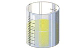

DNA Forensics Problem Set 2
Problem 6: Sources of DNA
Which of the following is NOT a potential source of DNA for forensic analysis?
A. hair roots
B. red blood cells
C. epithelial cells in urine
D. muscle tissue
E. saliva
Tutorial
Sources of DNA| Blood is an excellent source of human DNA. DNA is present in white blood cells of humans, but not red blood cells which lack nuclei. A dime-sized spot of blood, approximately 50 µl in volume, is enough DNA for a typical VNTR analysis. | |
| DNA from sperm heads is usually the most important source of DNA evidence for sexual assault cases. Five µl of semen contains approximately the same amount of DNA as 50 µl of blood. Special extraction methods are required to release DNA from sperm heads. Consequently sexual assault samples can be differentially extracted. The first extraction yields primarily DNA from epithelial cells of the victim, and the second extraction yields primarily semen DNA. Note the difference between the "female" and "male" fractions of the sexual assault evidence in Problem 7. | |
| Saliva contains cellular material. DNA can be extracted from bite marks, cigarette butts, postage stamps on envelopes, and envelope flaps for DNA analysis. In fact, the "Unabomber" was convicted partially on DNA evidence from a letter-bomb he mailed that did not explode. | |
| The hair follicle at the base of human hairs contains cellular material rich in DNA. In order to be used for DNA analysis, the hair must have been pulled from the body -- hairs that have been broken off do not contain DNA. | |
| Any body tissue that has not been degraded is a potential source of DNA. | |
| Bone is one of the best sources of DNA from decomposed human remains. Even after the flesh is decomposed, DNA can often be obtained from demineralized bone. DNA from bone has been used to identify the repatrioted bones from Vietnam era servicemen, and the remains of the White Russian Romanov family who were executed during the Bolsheviek revolution. | |
| Like bones, teeth can also be an excellent source of DNA, long after the rest of the body has decomposed. | |
|  | Urine itself does not contain DNA, but it may contain epithelial cells, which do contain DNA. Most healthy individuals, however, do not excrete epithelial cells in their urine. |


The Biology Project
University of Arizona
Monday, April 7, 1997
Contact the Development Team
http://biology.arizona.edu
All contents copyright © 1996. All rights reserved.